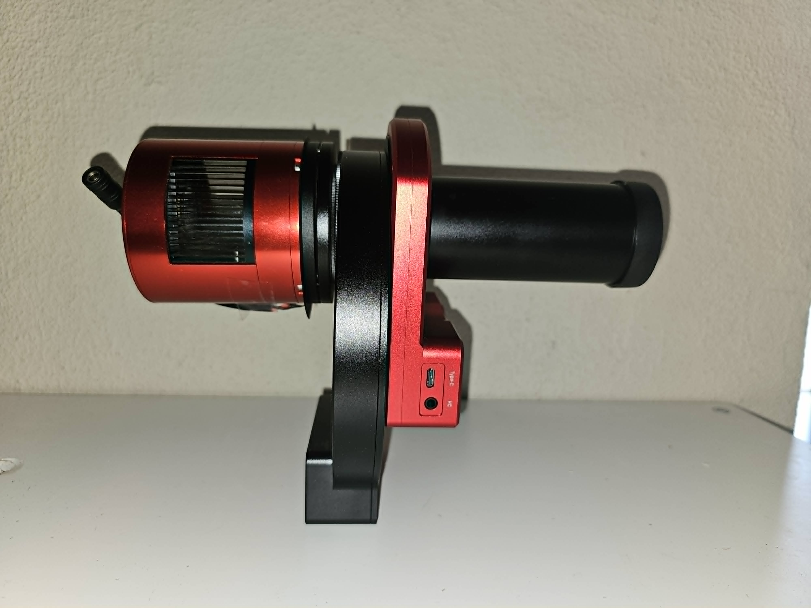
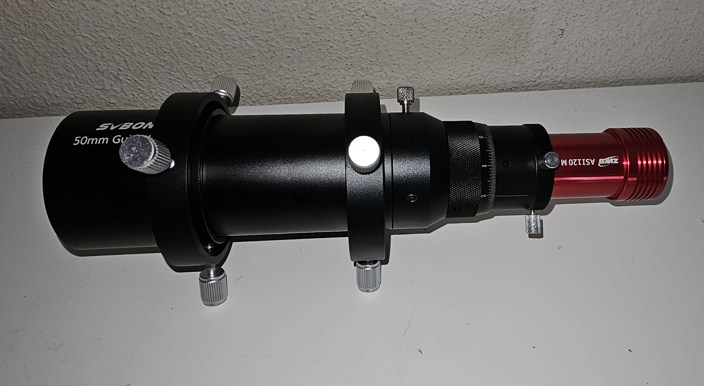
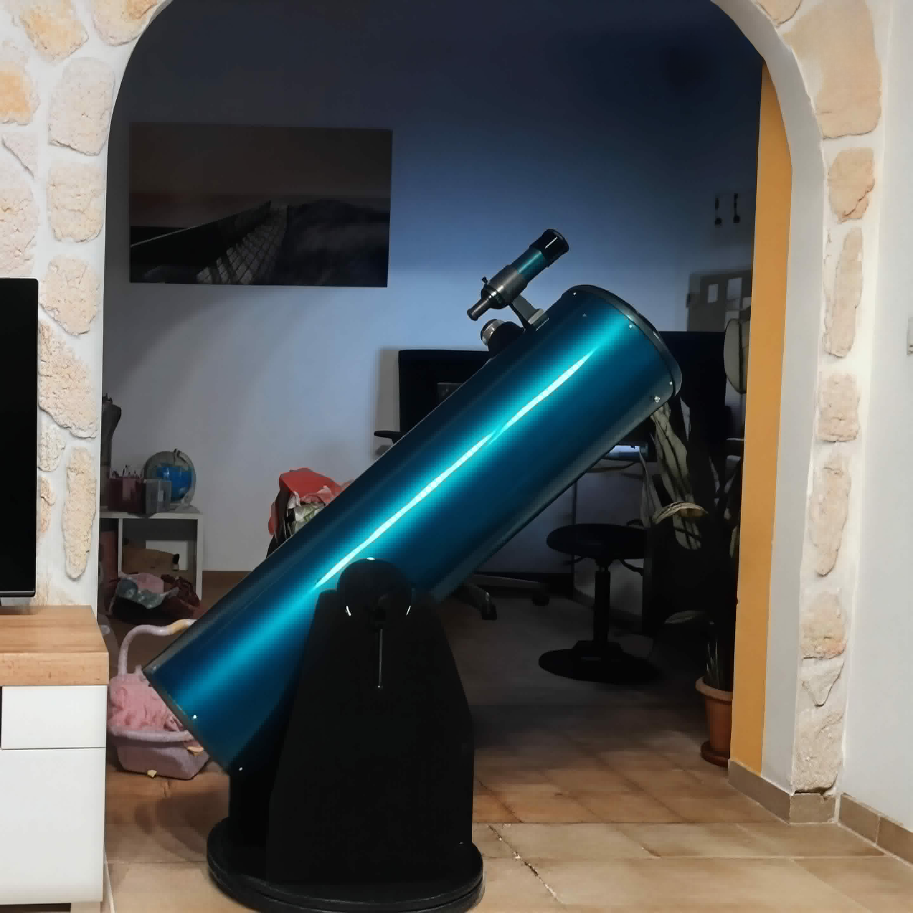
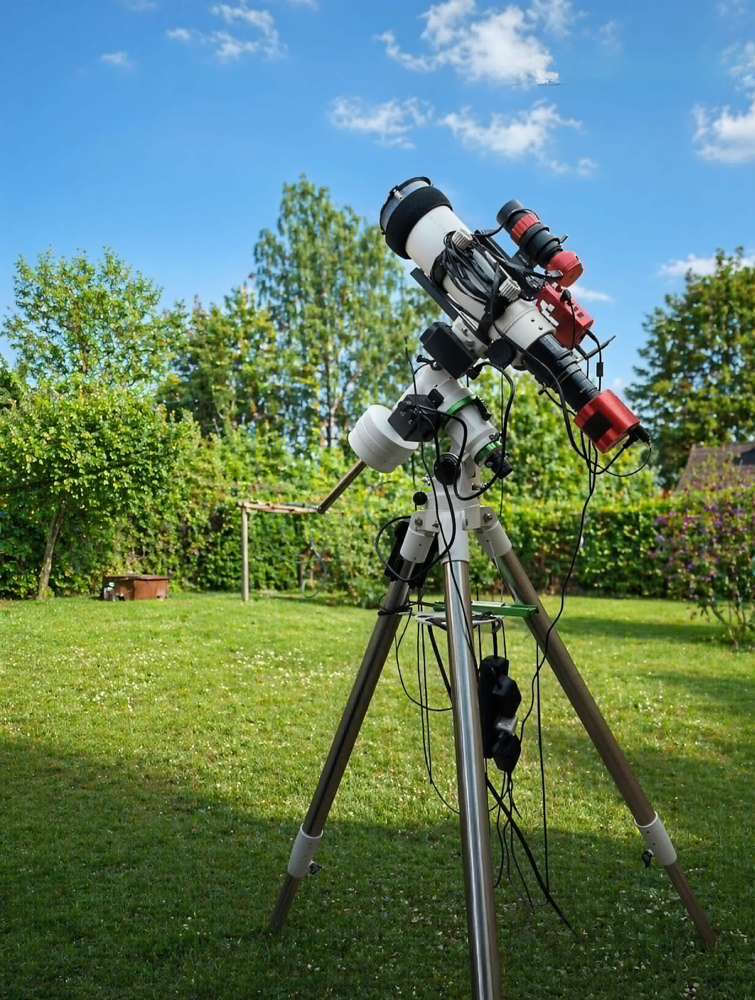

Meine aktuelle Teleskopausrüstung für die Astrofotografie.

Sky-Watcher EQ6-R PRO auf der Betonsäule.
Nachführung
- Sky-Watcher EQ6-R PRO
Teleskop
- Teleskop N 205/800 Quattro-200P OTA
- Teleskop N 130/650 Explorer 130PDS OTA
- TS-Optics Photoline 80 mm f/6 FPL53 Triplet-Apo 2,5"
- Dobson-Teleskop N 250/1250 DOB
Kamera
- Kamera ASI 294 MC Pro Color
- Kamera ASI 178 MC Color
- ZWO ASI120MM Mini Monochrome-Astronomiekamera

Komplettes Astrofotografie-Setup.

Guiding-System für eine präzise Nachführung.
Zubehör
- ZWO USB Filterrad für 5 × 2" Filter
- ZWO Rotator CAA
- TS-Optics Newtonian Coma Corrector 1.0×
- 2" MPCC Mark III
- ZWO Tilter T2
- SVBONY UV/IR Cut Filter
- Optolong 2" L-eXtreme Schmalband-Nebelfilter
Software
- Stellarium
- Siril
- Photoshop
- PIPP
- AutoStakkert
- RegiStax
- Capture

Dobson-Teleskop N 250/1250 für die visuelle Beobachtung.

TS-Optics Photoline 80 mm f/6 FPL53 Triplet-Apo.